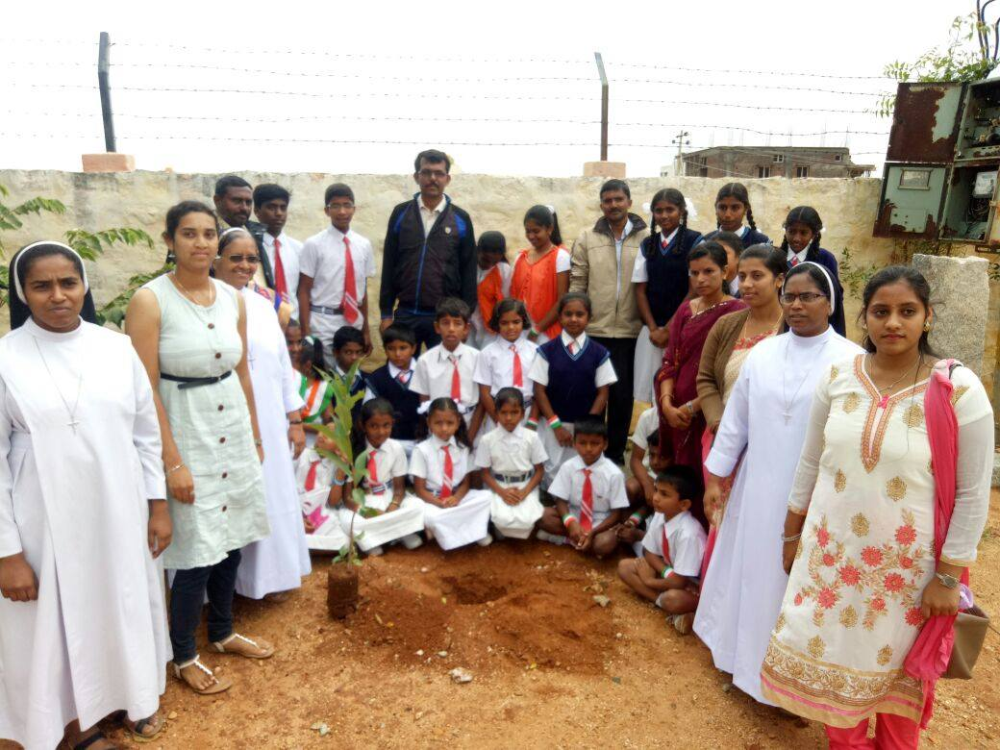
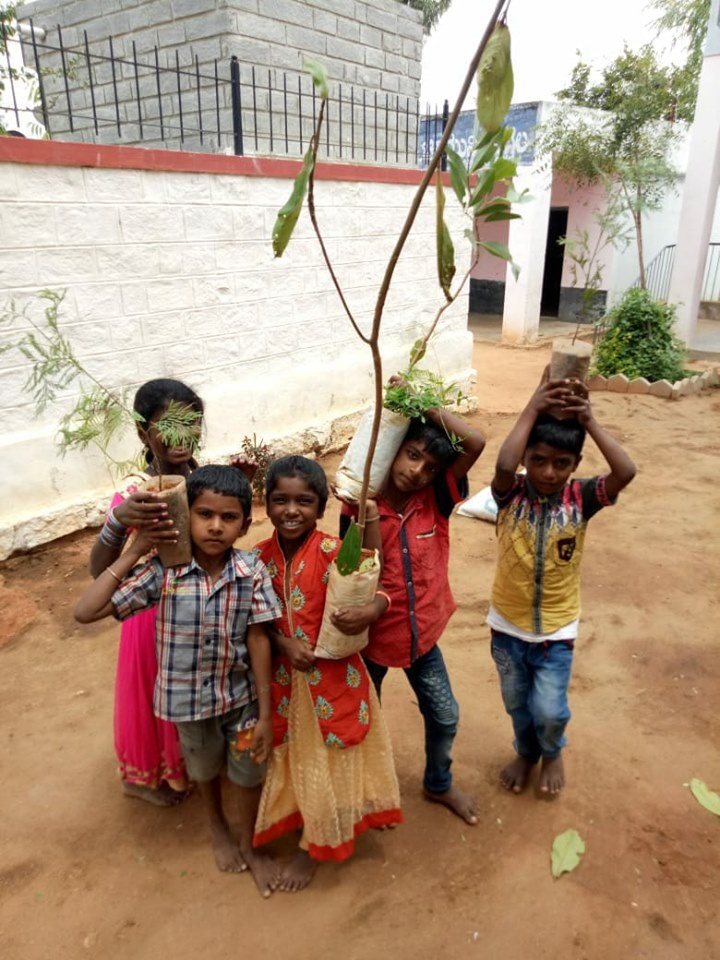
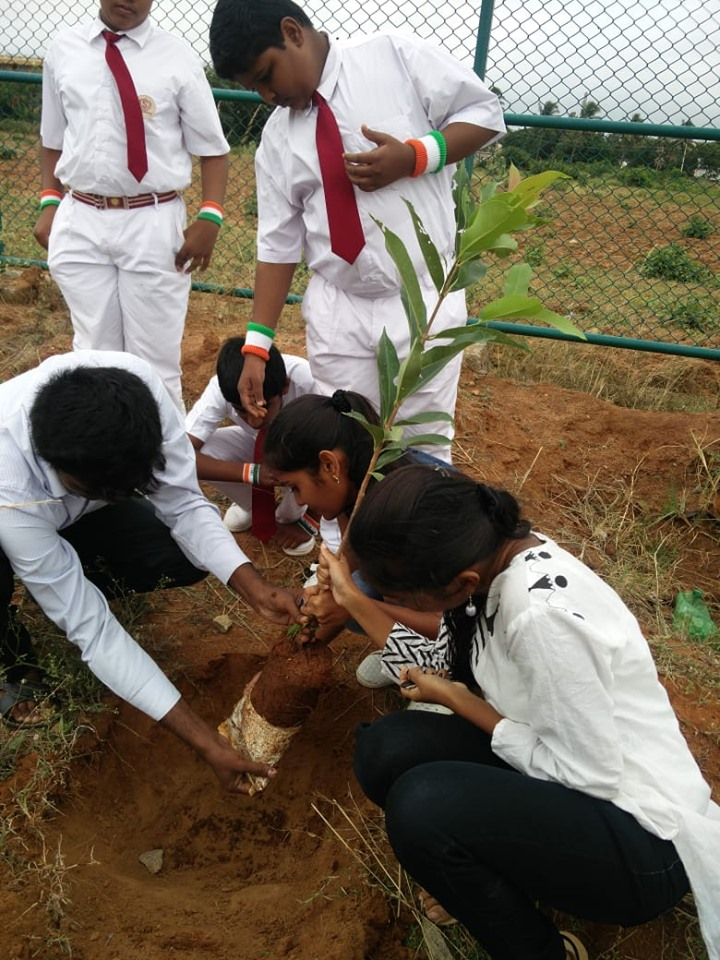
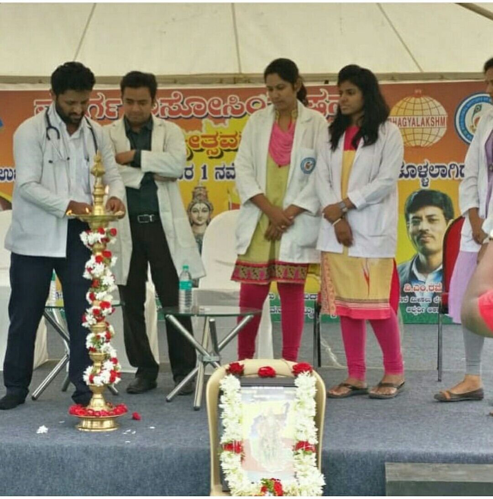
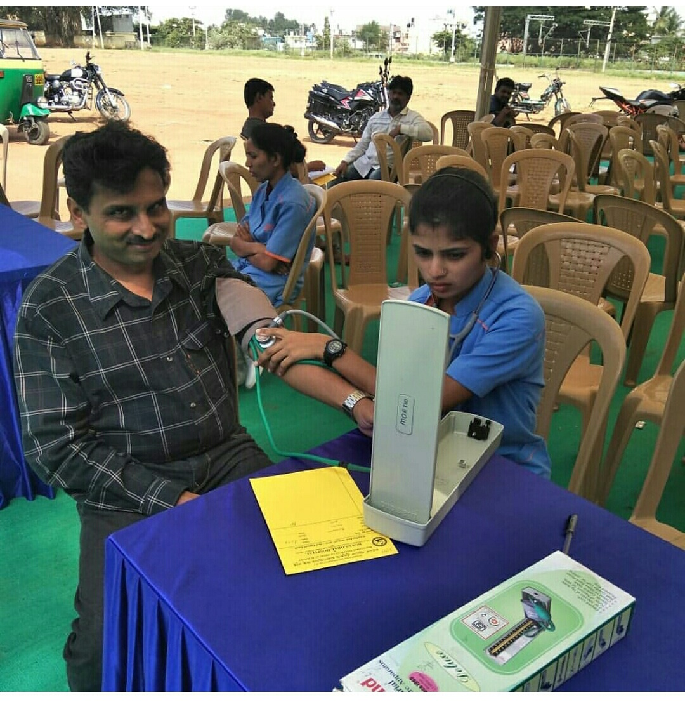
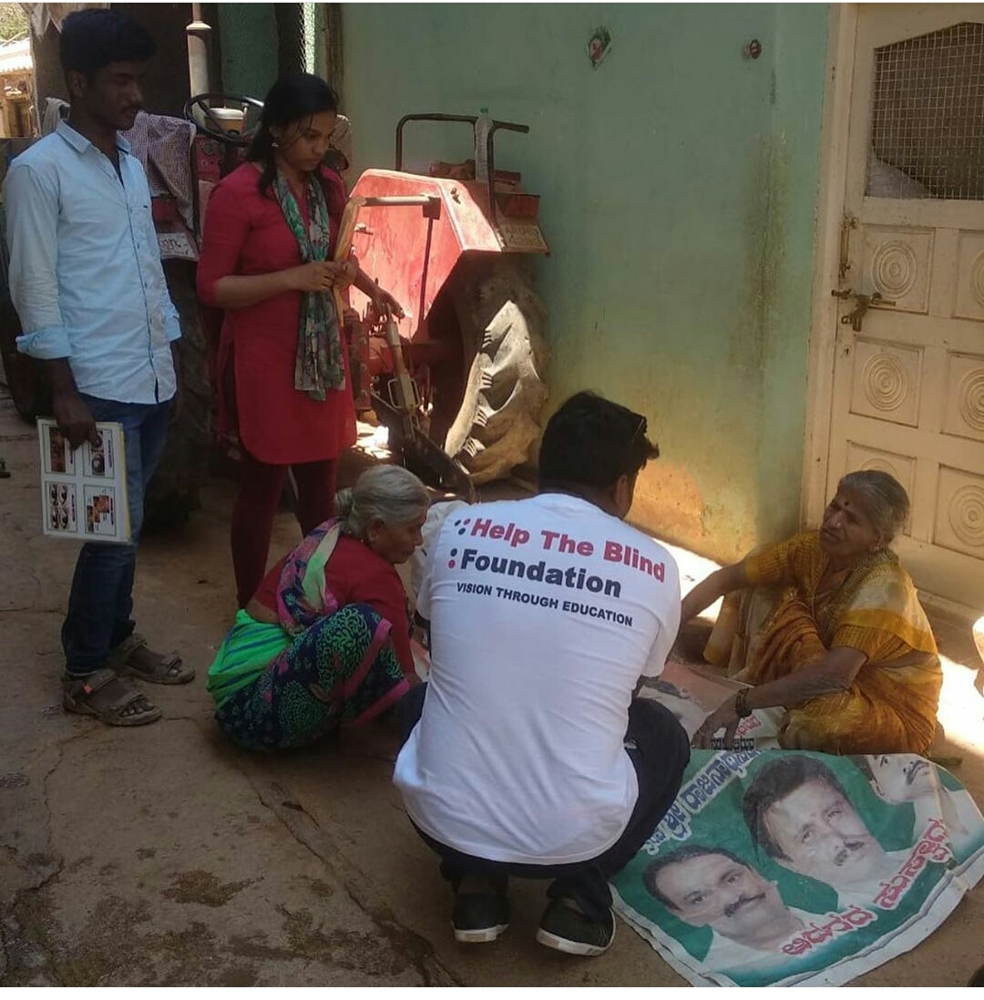
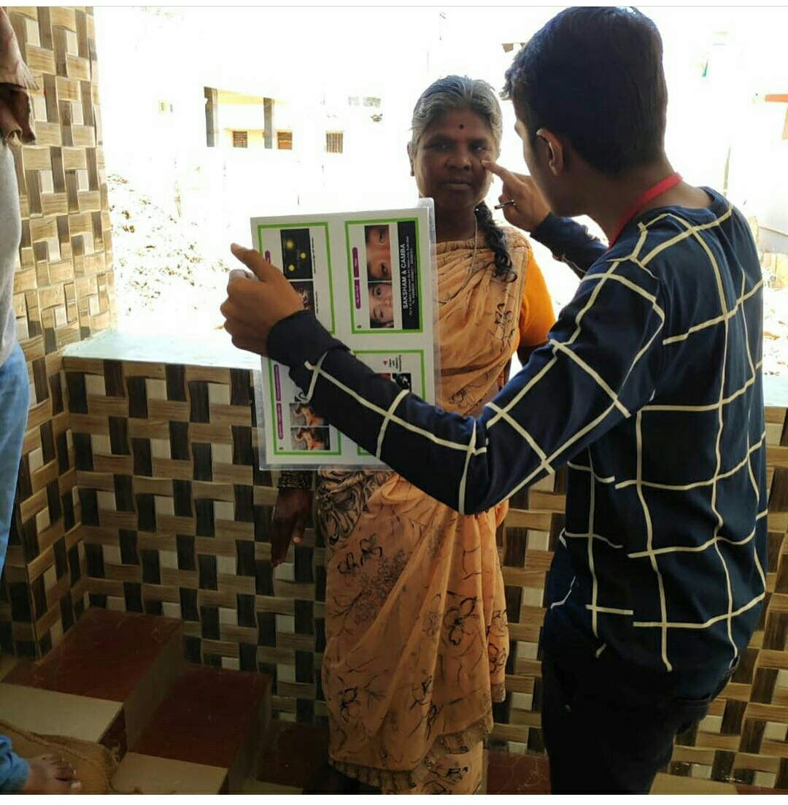
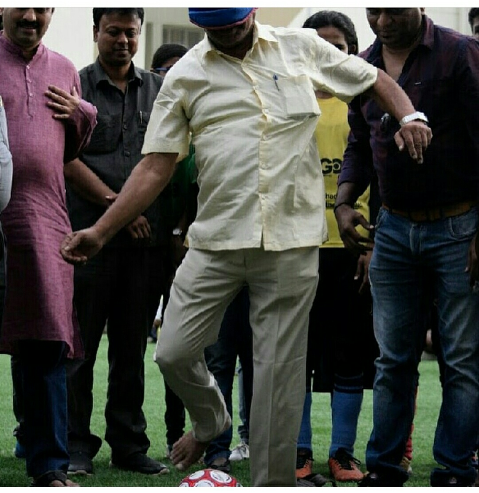
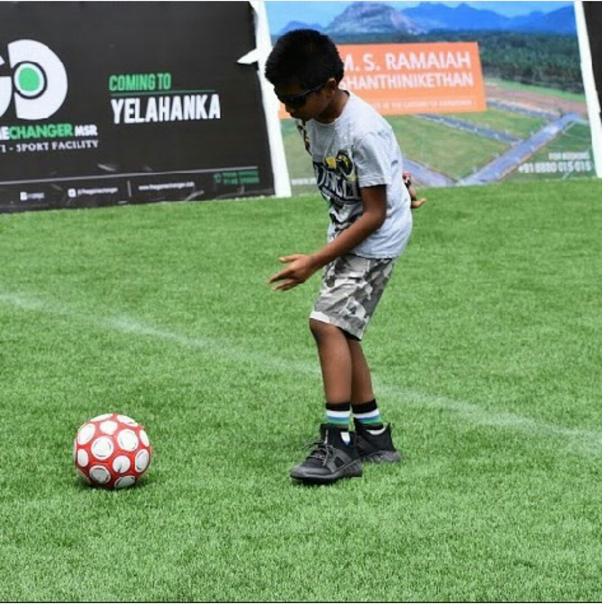

Plantation
Our first step towards this Social sevice was "Plantation",this was oraganised on August 15th.
This event was conducted with association with SAKSHAM NGO.
It was primarily started in Chinthamani Taluk with different colleges and schools including private and government.We the volunteers raised awareness about plants and importance of trees.We provided plants and made the school children to plant & guided them about saving watering the plants as they can water the plants by washing their hands in the planted area so that water can be saved.This drastically imporves the asthetic appearance of the campus & also gives the fresh air.



Medical Camp
The second step towards health.We all know that health is wealth.Now-adays suffering due to diseases is more & the treatment is much more.Many people were unable to get treatment due to lack of money.Orphanages & oldage homes were main victims.
We organised a Medical camp in kengeri,bangalore.people from 8 Orphanages & oldage homes, 20 school childrens came there for health checkup.Best Doctors were there to check & medicines were provied.
Raised health awareness by giving tips them.
Our next step was towards "Eye survey".Villages were our main target.Survey was conducted in rural districts of Hosakote,Devanahalli and Nelamangala.Testing was done and people with eye problems were treated.This evend was done with the help of other NGO's.






Blind Football
This was organised in association with Snehadeep NGO and other organisations.This was to show that the blind people are more good enough as same as normal people,they can do anything as the normal people can do.Main intention was to support phycialy challenged people.
This event realy took a great place in people,this event build unity in people irrespective of their backgrounds.

